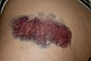

contuse

Has synonym(s): contusion
Definition: A bruise, also known as a contusion, is a type of hematoma of tissue, the most common cause being capillaries damaged by trauma, causing localized bleeding that extravasates into the surrounding interstitial tissues. Most bruises occur close enough to the epidermis such that the bleeding causes a visible discoloration. The bruise then remains visible until the blood is either absorbed by tissues or cleared by immune system action. Bruises which do not blanch under pressure can involve capillaries at the level of skin, subcutaneous tissue, muscle, or bone.
Source: Wikipedia
Wikipedia Page (Something wrong with this association? Let us know.)
Wikidata Page (Something wrong with this association? Let us know.)